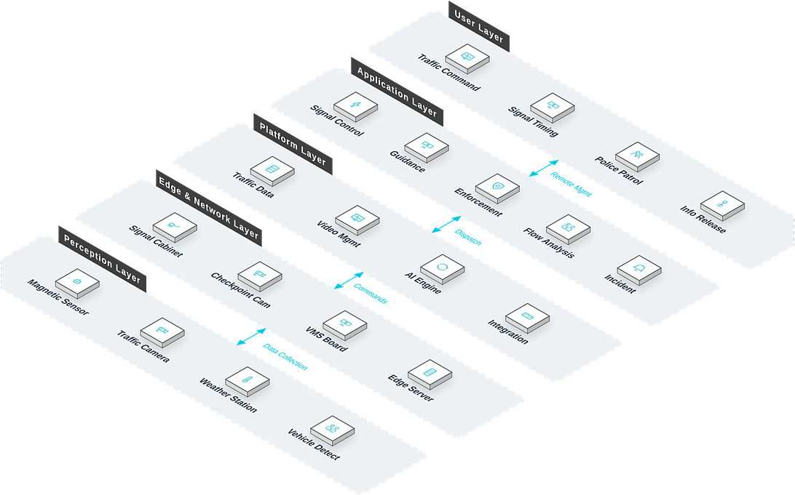

For urban traffic management authorities and transport infrastructure builders, a full-scenario intelligent traffic management solution covering signal control, video surveillance, violation detection, flow analysis and guidance publishing that addresses the core pain points of severe intersection congestion, frequent traffic violations and underutilized traffic data, improving road capacity and traffic safety.
Solution Overview
Provides urban traffic management authorities and transport infrastructure builders with a full-scenario intelligent traffic management solution covering signal control, video surveillance, violation detection, flow analysis and guidance publishing, addressing severe intersection congestion, frequent violations and underutilized traffic data, and improving road capacity and traffic safety.
Applicable to: Urban traffic management departments, transport infrastructure builders, highway operators.
- Compatible with mainstream domestic and international signal controller brands, protecting existing investments
- AI video analytics require no pavement-cutting loops, shortening construction periods
- Open data interfaces support connection to city traffic command centers and map service providers
- Participated in the Mile 2 integrated transport hub project, the Lagos Light Rail Blue Line Phase V project and the Kano Railway Station project
Benefits: Higher road capacity, fewer traffic accidents, and better public transport services.
Business Challenges
In urban traffic management, customers often face chronic intersection congestion, frequent violations and weak public transport services, and urgently need a full-scenario, data-driven solution compatible with existing signal infrastructure.
Severe intersection congestion
Fixed signal timing cannot adapt to changing flows; queues stretch long at peaks.
Frequent violations
Red-light running, speeding and wrong-way driving rely on manual enforcement with limited coverage.
Dormant traffic data
Intersection flow data goes unused, leaving optimization decisions without support.
Weak public transport
Buses get no priority, run late and deliver a poor passenger experience.
Worsening mobility and enforcement
Signal timing ignores real flows and violations rely on manual enforcement: congestion deepens at peak, incident and penalty handling slows, and commuter experience keeps degrading.
Compatibility with existing systems
Mainstream signal controller brands must be supported to protect investments.
Open data interfaces
Open interfaces are needed for command centers and map service providers.
Typical Scenarios:
Target Roles: Traffic engineers, traffic police commanders, road maintenance staff.
Solution Architecture
Smart Traffic follows a five-layer business topology: Traffic Command, Signal Timing and other offices run daily applications such as Signal Control and Guidance, coordinated by the platform layer; edge devices like Signal Cabinet and Checkpoint Cam sit on site, linking perception devices such as Magnetic Sensor and Traffic Camera — data flows upward and commands flow downward across the full chain.

Business layout: the user layer holds management offices (Traffic Command, Signal Timing…); the application layer carries daily functions; the platform layer provides Traffic Data and Video Mgmt; the edge and network layer marks on-site equipment positions (Signal Cabinet, Checkpoint Cam…); perception devices are deployed at Magnetic Sensor, Traffic Camera and other field locations.
Core Modules
Signal control
Compatible with mainstream domestic and international signal controller brands, with remote timing control.
AI video analytics
Flow and violation detection without pavement-cutting loops — short construction periods.
Violation detection
Automatic capture and evidence for red-light running, speeding and wrong-way driving.
Guidance publishing
Road information published in real time via guidance screens and open interfaces.
Bus priority
Bus detection automatically extends green time, improving punctuality.
Integration Capabilities:
- Compatible with mainstream domestic and international signal controller brands
- AI video analytics require no pavement-cutting loops
- Open data interfaces for city traffic command centers and map service providers
Advantages & Delivery
With AI video analytics and multi-brand compatibility, we deliver higher road capacity and data-driven decision support for cities, implemented through site survey, signal tuning and continuous optimization services.
Differentiated Advantages
Strong Compatibility
Compatible with mainstream domestic and international signal-controller brands, protecting existing investment.
Easy Construction
AI video analysis needs no pavement-cut loops: short construction period, low maintenance cost.
Open Data
Open interfaces connect to city traffic command centers and map providers, releasing data value.
Rich Engineering Experience
Involved in the Mile 2 integrated transport hub project, the Lagos Light Rail Blue Line Phase V project and the Kano Railway Station project.
Intelligent Signal Optimization
Timing plans auto-optimize from flow data, continuously improving throughput.
Multi-Scenario Coverage
Fits signal control, traffic monitoring, guidance publishing and bus priority.
Implementation Process
Requirement Research
Survey intersections and management goals.
Site Survey
Fix detection, signal and guidance points.
Equipment Installation
Install detectors, controllers and guidance screens.
Platform Deployment
Deploy and configure the signal platform.
Signal Tuning
Optimize timing plans from flow data.
Training & Handover
Train managers and go live.
Service Guarantee
Client Value
Higher road capacity, fewer accidents and better public transit, giving city traffic management data support for decisions.
One-year warranty
Continuous signal-timing optimization
Remote technical support
Periodic inspection and maintenance
Case Studies
Mile 2 Integrated Transport Hub Project
Background: A major transport hub construction project in Lagos, Nigeria.
Challenge: Heavy, complex traffic flows demanded an integrated intelligent system.
Solution: Participated in ELV and intelligent systems construction.
Results: Completed the hub's intelligent systems, building experience in large traffic engineering projects.
Lagos Light Rail Blue Line Phase V Project
Background: A city rail transit project in Lagos, Nigeria.
Challenge: Complex rail systems with many intelligent subsystems and high integration requirements.
Solution: Participated in ELV and intelligent systems construction.
Results: Delivered on schedule, extending the company's rail-transit experience.
Kano Railway Station Project
Background: The Kano Railway Station construction project in Nigeria.
Challenge: Dense passenger and vehicle flows required a complete intelligent management system.
Solution: Participated in ELV and intelligent systems construction.
Results: Completed the systems, establishing transport-station delivery capability.